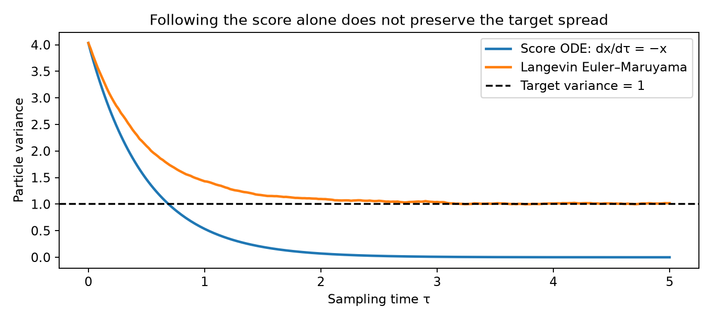
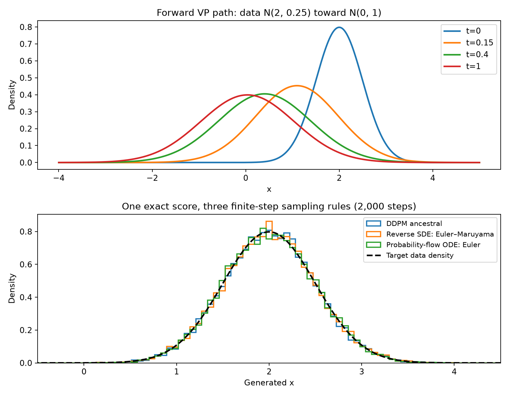

flowchart TD
A["Training data and a chosen noise schedule"] --> B["Construct clean and noisy training pairs"]
B --> C["Train one noise predictor"]
C --> D["Convert the prediction into a score"]
D --> E["Reverse SDE: stochastic dynamics"]
D --> F["Probability-flow ODE: deterministic dynamics"]
E --> G["DDPM ancestral sampling or Euler–Maruyama"]
F --> H["Euler integration toward data time"]
G --> I["Generated samples"]
H --> I
15 · From Score to Sampling
NoteTraining a predictor and using it to generate samples
The goal is to generate new observations from a data distribution. We will construct a family of noisy data distributions, learn their scores, and use that one learned function in different sampling algorithms. All arguments begin in one dimension. Data are at time \(t=0\), and the nearly standard Gaussian reference is at time \(t=1\).
This tutorial contains the complete argument in one place. It assumes differentiation, Gaussian random variables, and squared-error regression; the required ODE and SDE ideas are introduced below. Longer derivations are collected at the end. Nothing here requires reading the other lecture notes first.
The complete recipe before the derivations
Suppose a dataset contains samples from an unknown density \(p_{\mathrm{data}}\). We can sample this density by selecting a training observation, but we want a model that generates observations without being handed a clean example at inference time.
We divide the construction into a training problem and a sampling problem.
- Choose how to corrupt data. Contract each observation and add Gaussian noise. The chosen noise schedule defines a sequence of distributions, beginning with data and ending close to a standard Gaussian.
- Construct supervised examples. Select a clean observation, a noise level, and a Gaussian noise draw. Combine them to produce the noisy input. The noise draw supplies a known regression target.
- Train one predictor. Given a noisy input and its time, predict its noise. A known scaling converts this prediction into the score of the noisy density.
- Choose a sampler. Start with a new standard Gaussian draw. Repeatedly evaluate the trained predictor and update the current sample toward time zero.
The network does not learn one function for DDPM and another for the probability-flow ODE. Both can use the same score estimate when the schedule and time inputs agree. The numerical update is a separate choice.
ImportantThe connection we will establish
DDPM’s forward corruption has a continuous limit: the variance-preserving (VP) SDE. DDPM ancestral sampling is a discretization of its reverse SDE. The probability-flow ODE is a different, deterministic dynamics with the same ideal marginal densities.
Thus the useful comparison is a shared density path and closely related training, followed by two sampling routes. It is not correct to identify the probability-flow ODE itself as the direct continuous limit of the stochastic DDPM sampler. An ODE also needs a numerical discretization when implemented.
Our main references are Ho, Jain, and Abbeel, DDPM, especially Algorithms 1–2 and Section 3, and Song et al., score-based SDEs, especially Sections 2.2, 3.2–3.4, 4.3, and Appendix E. Yang Song’s blog provides an accompanying visual explanation.
1. The score describes a density through its spatial derivative
For a positive differentiable density \(p(x)\), define
\[\boxed{s(x)=\frac{d}{dx}\log p(x)=\frac{p'(x)}{p(x)}.}\]
The derivative is with respect to the observation \(x\), not a neural-network parameter. A positive score indicates that density increases locally as \(x\) increases. A negative score indicates the opposite. Its magnitude measures the local slope of log density.
For a Gaussian,
\[p(x)=\mathcal N(x;\mu,a^2) \quad\Longrightarrow\quad s(x)=-\frac{x-\mu}{a^2}.\]
In particular, the standard Gaussian has score \(-x\). If a density is written as \(p(x)=e^{-E(x)}/Z\), its score is \(-E'(x)\): the normalizing constant disappears under differentiation. This explains why scores can be useful even when evaluating a normalized density is difficult.
What would it mean to learn the score?
An ideal regression problem would minimize
\[\frac12\mathbb E_{X\sim p}[(s_\theta(X)-s(X))^2].\]
But samples from \(p\) do not give us the target \(s(X)\). Score matching refers to objectives that recover the score without requiring these unknown target values. In this tutorial we use denoising score matching: deliberately add Gaussian noise so that a conditional score becomes a known label.
For example, form \(Y=X_0+\sigma\varepsilon\) at a fixed \(\sigma>0\), with \(X_0\sim p_{\mathrm{data}}\) and independent \(\varepsilon\sim\mathcal N(0,1)\). For each constructed pair, we know
\[\partial_y\log p(y\mid X_0)\big|_{y=Y} =-\frac{Y-X_0}{\sigma^2}=-\frac{\varepsilon}{\sigma}.\]
Regressing these labels on \(Y\) learns the score of the noisy marginal density, not a separate score conditioned on each clean observation. Section 7 will derive why conditional averaging gives precisely the required target. First, suppose the score is available and ask how it can generate samples.
2. Langevin dynamics: the first sampler built from a score
A vector field specifies velocity. In one dimension it is a scalar function: the ODE \(dx/d\tau=s(x)\) tells a particle how to move. For \(s(x)=-x\), the solution is \(x(\tau)=e^{-\tau}x(0)\). Every particle approaches zero.
That does not sample a standard Gaussian. A Gaussian needs a nonzero spread of particles. Following its score alone moves particles toward its mode and contracts their distribution.
Langevin dynamics adds a random increment at every step:
\[\boxed{x_{k+1}=x_k+\eta s(x_k)+\sqrt{2\eta}\,z_k, \qquad z_k\overset{\mathrm{iid}}\sim\mathcal N(0,1).}\]
Here \(\eta>0\) is the algorithm’s step size. Its continuous-time description is
\[dX_\tau=s(X_\tau)\,d\tau+\sqrt2\,dW_\tau.\]
\(W_\tau\) is Brownian motion: over a time interval of length \(\eta\), its increment is Gaussian with mean zero and variance \(\eta\), independently of earlier increments. Replacing that increment by \(\sqrt\eta\,z_k\) gives the displayed Euler–Maruyama update. This is the SDE counterpart of Euler integration for an ODE.
Why the target density can be stationary
Let \(q_\tau\) denote the evolving density of the sampler, while \(p\) remains its fixed target. The score drift transports probability with flux \(q_\tau s\), while Brownian noise contributes the flux \(-\partial_x q_\tau\). At \(q_\tau=p\) these cancel:
\[p\,s-\partial_xp=p\,\partial_x\log p-\partial_xp=0.\]
NoteA fixed score, a chosen initial law, and fresh noise
The score \(s(x)=\partial_x\log p(x)\) has no explicit dependence on sampling time \(\tau\) or step index \(k\). Every Euler–Maruyama step evaluates the same function at the current position \(x_k\). Its value can change because the particle moves; the target density and its score field remain fixed. Changing the numerical step size does not change the target score.
Choose an initial law \(P_{\mathrm{init}}\) and draw \(X_0\sim P_{\mathrm{init}}\) independently of the driving Brownian motion. The initial law need not be Gaussian or equal to the target: it may, for example, be uniform, Gaussian, or a point mass at a chosen position. This initialization is separate from the fresh \(z_k\sim\mathcal N(0,1)\) used at every step. Each \(z_k\) is independent of \(X_0\) and all earlier increments, and therefore of the current state \(x_k\). The initial law may itself be Gaussian, but its draw and the subsequent Gaussian increments have different roles. Initial and target supports need not coincide, but the dynamics must be defined at the starting positions. Restricted-support targets may require boundary conditions; zeros of the target density can make its score undefined. Convergence requires a separate argument, not merely a choice of initial law.
The score term is the drift; the Brownian term is the diffusion or noise term, not a Brownian drift. For a well-defined, ergodic Langevin process, suitable initializations approach the target as sampling time grows. Initialization affects how long this takes; neither an arbitrary finite running time nor a finite Euler step guarantees exact target samples. For example, the standard logistic target admits fixed starting points such as zero or six.
Therefore the continuous Langevin dynamics preserves \(p\) when initialized from \(p\). Convergence from another initial law needs additional regularity and mixing conditions. A finite Euler–Maruyama step introduces numerical bias. Appendix A gives the density equation and a Gaussian check.

What this establishes: a score can define a sampling algorithm. However, Langevin targets one fixed density and may mix slowly between separated modes. Diffusion modeling next constructs an entire path of increasingly noisy densities. Its reverse sampler moves through that path rather than equilibrating at one fixed target.
3. DDPM constructs the noisy distributions and the training pairs
We now use \(t\) for the corruption time, with data at zero. Write \(p_t\) for the marginal density at time \(t\). Choose grid times
\[0=t_0<t_1<\cdots<t_N=1.\]
At step \(n\), choose a noise variance \(b_n\in(0,1)\) and form
\[\boxed{X_{t_n}=\sqrt{1-b_n}\,X_{t_{n-1}}+\sqrt{b_n}\,Z_n, \qquad Z_n\overset{\mathrm{iid}}\sim\mathcal N(0,1).}\]
This is a contraction followed by independent Gaussian noise. Repeating these steps progressively reduces the influence of the original observation.
One step, many steps, and a direct training example
Define the cumulative signal amplitude and noise amplitude by
\[\boxed{\alpha_{t_n}^2=\prod_{j=1}^n(1-b_j), \qquad \sigma_{t_n}^2=1-\alpha_{t_n}^2.}\]
Combining the independent Gaussian increments gives
\[\boxed{X_{t_n}\mid X_0=x_0\sim \mathcal N(\alpha_{t_n}x_0,\sigma_{t_n}^2).}\]
Consequently, one training example at a selected time can be generated directly:
\[X_{t_n}=\alpha_{t_n}X_0+\sigma_{t_n}\varepsilon, \qquad \varepsilon\sim\mathcal N(0,1),\quad \varepsilon\perp X_0.\]
There is no need to simulate all the preceding steps to construct this example. This direct formula gives the correct conditional distribution at the selected time. Reusing one fixed \(\varepsilon\) at every time would not reproduce the joint trajectories of the forward DDPM chain.
A small notation table used throughout this tutorial
| Symbol here | Meaning | Ho’s DDPM notation |
|---|---|---|
| \(b_n\) | One discrete forward-step noise variance | \(\beta_n\) |
| \(\alpha_{t_n}\) | Cumulative signal amplitude | \(\sqrt{\bar\alpha_n}\) |
| \(\sigma_{t_n}\) | Cumulative noise amplitude | \(\sqrt{1-\bar\alpha_n}\) |
| \(\beta(t)\) | Continuous noise rate introduced next | Not a single discrete \(\beta_n\) |
| \(s_t(x)\) | Marginal score \(\partial_x\log p_t(x)\) | Converted from the noise predictor |
Using \(b_n\) for a variance and \(\beta(t)\) for a rate avoids treating them as interchangeable. We retain \(\alpha_t\) for an amplitude throughout; it is not Ho’s one-step retention \(1-\beta_n\).
Where is the score in this forward process?
The forward corruption does not need the score. Its contraction and noise are prescribed. Their purpose is to supply a tractable density path and supervised training pairs.
The score becomes necessary when we want to generate data by reversing the progression of densities. It describes how the current noisy distribution depends on position. At a late time the distribution is simple; nearer the data it becomes increasingly structured. A time-conditioned network will estimate all these scores.
4. Small forward steps give the VP SDE
Let \(h_n=t_n-t_{n-1}\) and take \(b_n=\beta(t_{n-1})h_n+O(h_n^2)\) for a smooth nonnegative rate. Expanding \(\sqrt{1-b_n}\) gives
\[X_{t_n}-X_{t_{n-1}} \approx-\frac{\beta(t_{n-1})}{2}X_{t_{n-1}}h_n +\sqrt{\beta(t_{n-1})h_n}\,Z_n.\]
The first term is proportional to elapsed time; the random term is proportional to its square root. These are the drift and Brownian increment of
\[\boxed{dX_t=-\frac{\beta(t)}2X_t\,dt+\sqrt{\beta(t)}\,dW_t.}\]
This is the variance-preserving SDE. Its conditional distribution remains Gaussian:
\[\alpha_t=\exp\left(-\frac12\int_0^t\beta(u)\,du\right), \qquad \sigma_t^2=1-\alpha_t^2, \qquad X_t=\alpha_tX_0+\sigma_t\varepsilon.\]
Equivalently, \(\beta(t)=-2\,d\log\alpha_t/dt\). Thus the rate in the SDE and the amplitudes in the training examples describe the same schedule. Appendix B derives the relation from the discrete chain. On a grid, choosing
\[b_n=1-\exp\left(-\int_{t_{n-1}}^{t_n}\beta(u)\,du\right)\]
makes the discrete conditional transition agree exactly with this linear SDE’s forward transition.
NoteWhat “variance preserving” and the terminal Gaussian mean
If \(X_0\sim\mathcal N(0,1)\), the forward VP process preserves that law. For arbitrary data, its variance need not remain constant. In fact,
\[\operatorname{Var}(X_t)=\alpha_t^2\operatorname{Var}(X_0)+1-\alpha_t^2.\]
With a finite integrated rate, \(\alpha_1>0\), so the terminal law generally retains a small data contribution. Starting generation from \(\mathcal N(0,1)\) is then an approximation to \(p_1\). Exact Gaussian termination for arbitrary data requires a limiting construction; we do not assume it for a finite schedule.
An SDE drift is not the whole transport velocity
The forward SDE has drift \(f(x,t)=-\beta(t)x/2\). But that drift alone does not describe its density evolution: the random increments also spread probability. To construct a deterministic ODE with the same density path, we must account for both effects. This is where the score enters the probability-flow velocity.
5. The same density path gives two reverse sampling dynamics
For a general scalar forward SDE
\[dX_t=f(X_t,t)\,dt+g(t)\,dW_t,\]
the density evolves according to the Fokker–Planck equation:
\[\partial_t p_t=-\partial_x(f p_t)+\frac12g(t)^2\partial_x^2p_t.\]
The first term describes drift transport. The second describes random spreading. A deterministic ODE \(\dot x=v(x,t)\) instead has the continuity equation
\[\partial_t p_t=-\partial_x(p_tv).\]
Since \(\partial_xp_t=p_ts_t\), rewrite Fokker–Planck as
\[\partial_t p_t=-\partial_x\left[p_t\left(f-\frac12g^2s_t\right)\right].\]
We have identified the deterministic probability-flow velocity:
\[\boxed{v(x,t)=f(x,t)-\frac12g(t)^2s_t(x).}\]
For VP, this is \(v(x,t)=-\beta(t)[x+s_t(x)]/2\). It moves the density forward when integrated from zero to one. Integrating the same ODE toward decreasing \(t\) gives generation.
Put both reverse samplers on an increasing clock
To keep signs unambiguous, define the sampling clock \(\tau=1-t\) and write \(Y_\tau\) for the current generated particle. As \(\tau\) increases, the corruption time \(t\) decreases.
| Dynamics | Equation in the increasing sampling clock, with \(t=1-\tau\) |
|---|---|
| Reverse SDE | \(dY_\tau=[-f(Y_\tau,t)+g(t)^2s_t(Y_\tau)]\,d\tau+g(t)\,d\overline W_\tau\) |
| Probability-flow ODE | \(dY_\tau/d\tau=-f(Y_\tau,t)+\tfrac12g(t)^2s_t(Y_\tau)\) |
The reverse-SDE equation is a time-reversal result, stated here under the usual smoothness and density assumptions. It is not obtained by just negating the forward drift. Appendix C verifies that its density evolves along the same reversed path.
For the VP construction the two equations become
\[\boxed{dY_\tau=\beta(t)\left[\frac{Y_\tau}{2}+s_t(Y_\tau)\right]d\tau +\sqrt{\beta(t)}\,d\overline W_\tau,}\]
\[\boxed{\frac{dY_\tau}{d\tau}=\frac{\beta(t)}2\left[Y_\tau+s_t(Y_\tau)\right].}\]
With the exact score and correct initial law \(Y_0\sim p_1\), their one-time densities agree: \(Y_\tau\sim p_{1-\tau}\). Their trajectories and joint distributions across times differ. Learned scores, finite numerical steps, and an approximate terminal prior can all cause discrepancies in practice.
Why merely removing the noise is wrong
Removing the Brownian increment from the reverse SDE leaves drift \(\beta(t)[x/2+s_t(x)]\). The probability-flow drift is \(\beta(t)[x+s_t(x)]/2\). The score coefficient must also change.
A standard Gaussian checks this immediately. Its score is \(-x\) at every time under VP. The probability-flow velocity is zero, so Gaussian particles stay where they are. The reverse SDE is an Ornstein–Uhlenbeck process with drift \(-\beta x/2\) and noise amplitude \(\sqrt\beta\); the Gaussian is stationary. Removing its noise alone would instead contract the particles to zero.
6. Turn the dynamics into algorithms
At the current corruption time \(t=t_n\), choose a positive backward step \(h_n=t_n-t_{n-1}\). Suppose we can evaluate \(s_\theta(x,t)\).
Deterministic sampler: Euler for the probability-flow ODE
Euler evaluates the velocity at the current particle and takes a short step:
\[\boxed{x_{t_{n-1}}=x_{t_n}+\frac{h_n\beta(t_n)}2 \left[x_{t_n}+s_\theta(x_{t_n},t_n)\right].}\]
The initial draw is random, but no new noise is added during this recursion. This is explicit Euler integrated backward in corruption time, not the implicit numerical method called backward Euler.
Stochastic sampler: Euler–Maruyama for the reverse SDE
The reverse SDE gives
\[\boxed{x_{t_{n-1}}=x_{t_n}+h_n\beta(t_n) \left[\frac{x_{t_n}}2+s_\theta(x_{t_n},t_n)\right] +\sqrt{h_n\beta(t_n)}\,z_n,}\]
where each \(z_n\sim\mathcal N(0,1)\) is independent. Both this update and the ODE update use the score at the current time and position. They differ in the score coefficient and the presence of new Gaussian noise.
DDPM ancestral sampling is another discretization of the stochastic route
The one-step forward observation is \(X_{t_n}=\sqrt{1-b_n}X_{t_{n-1}}+\sqrt{b_n}Z_n\). Gaussian denoising gives \(\sqrt{1-b_n}\,\mathbb E[X_{t_{n-1}}\mid X_{t_n}=x]=x+b_ns_t(x)\), the single-step form of the identity derived in Section 7. Thus the score determines the reverse conditional mean. Ho’s parameterization replaces it by the learned score:
\[\mu_\theta(x,t_n)=\frac1{\sqrt{1-b_n}} \left[x-\frac{b_n}{\sigma_{t_n}}\varepsilon_\theta(x,t_n)\right] =\frac{x+b_ns_\theta(x,t_n)}{\sqrt{1-b_n}}.\]
The ancestral update samples from a modeled Gaussian reverse transition:
\[\boxed{x_{t_{n-1}}=\mu_\theta(x_{t_n},t_n)+\sqrt{\nu_n}\,z_n.}\]
Two fixed reverse-variance choices are \(\nu_n=b_n\) and \(\nu_n=\widetilde b_n=b_n\sigma_{t_{n-1}}^2/\sigma_{t_n}^2\). Ho’s sampling algorithm sets \(z_1=0\) at the final data step. This endpoint convention is separate from the interior reverse transitions.
For an interior step with standard Gaussian marginals, the exact score is \(-x\), so this mean becomes \(\sqrt{1-b_n}x\). Recurring with only that mean reduces variance from 1 to \(1-b_n\). Adding independent noise with variance \(b_n\) restores variance 1. The noise accounts for reverse conditional uncertainty; it is not an arbitrary perturbation added after denoising.
To see the SDE connection, first use \(\nu_n=b_n\) and expand the mean:
\[\frac{x+b_ns_\theta}{\sqrt{1-b_n}} =x+b_n\left(\frac x2+s_\theta\right)+O(b_n^2).\]
With \(b_n=\beta(t_n)h_n+O(h_n^2)\), this has the leading drift of reverse-SDE Euler–Maruyama. Its noise variance also has the required leading term \(\beta(t_n)h_n\). The posterior-variance choice has the same limit on intervals bounded away from zero noise. Endpoint behavior needs separate care.
Thus DDPM and reverse-SDE Euler–Maruyama share a continuous limit; their finite updates need not be identical. The \(O(h_n^2)\) comparison concerns conditional means and variances, not a claim of second-order stochastic trajectory accuracy. Song et al.’s Appendix E develops this correspondence. The Gaussian reverse kernel is a modeling/small-step approximation for general data, even when its conditional mean is exact.
What happens to the DDIM noise term?
Deterministic DDIM is another discretization of the probability-flow route, using transformed coordinates rather than the direct Euler step above. The DDIM paper first gives a generalized update with fresh Gaussian noise, then sets its step-noise coefficient to zero in Section 4.1 after Eq. (12); Eq. (16) denotes this choice by \(\eta=0\). It is not obtained by deleting the noise from Ho’s ancestral update while keeping Ho’s mean. We keep DDIM’s derivation outside the main recipe here so that the two primary routes remain distinguishable.
7. Train the score using the same denoising regression as DDPM
We have constructed the samplers assuming a score. Now we supply the missing function. At a selected time, form
\[X_t=\alpha_tX_0+\sigma_t\varepsilon, \qquad X_0\sim p_{\mathrm{data}},\quad\varepsilon\sim\mathcal N(0,1).\]
The conditional score of this Gaussian observation is known:
\[U_t=\partial_x\log p_t(x\mid X_0)\big|_{x=X_t} =-\frac{X_t-\alpha_tX_0}{\sigma_t^2} =-\frac{\varepsilon}{\sigma_t}.\]
The training target \(U_t\) depends on the sampled clean/noisy pair. The network receives only \((X_t,t)\), so it cannot generally recover the particular \(X_0\) or \(\varepsilon\) used for every pair. Squared-error regression averages the possible labels conditional on those inputs.
Why conditional-score labels learn the marginal score
At a fixed positive time, differentiate the noisy marginal density:
\[\begin{aligned} p_t(x)&=\int p_t(x\mid x_0)p_{\mathrm{data}}(x_0)\,dx_0,\\ \partial_x\log p_t(x) &=\int \partial_x\log p_t(x\mid x_0) \frac{p_t(x\mid x_0)p_{\mathrm{data}}(x_0)}{p_t(x)}\,dx_0\\ &=\int \partial_x\log p_t(x\mid x_0)p(x_0\mid X_t=x)\,dx_0\\ &=\mathbb E[U_t\mid X_t=x]. \end{aligned}\]
The posterior appears in this proof, but we never have to evaluate it during training. Drawing clean observations and independent noise supplies samples from their joint law. The regression identity
\[\mathbb E[(s_\theta(X_t,t)-U_t)^2\mid X_t,t] =(s_\theta(X_t,t)-s_t(X_t))^2+\operatorname{Var}(U_t\mid X_t,t)\]
shows that the unknown conditional-variance term cannot affect the optimal predictor. This is why a known conditional score is a valid target for learning the unknown marginal score.
Noise prediction is a scaled version of this regression
Set \(s_\theta(x,t)=-\varepsilon_\theta(x,t)/\sigma_t\). Then, for each training time,
\[\boxed{(\varepsilon_\theta(X_t,t)-\varepsilon)^2 =\sigma_t^2\left(s_\theta(X_t,t)+\frac{\varepsilon}{\sigma_t}\right)^2.}\]
Unweighted noise prediction is score regression weighted by \(\sigma_t^2\). It avoids training directly against targets whose scale grows as \(1/\sigma_t\) near the clean endpoint. It does not mean the network knows the noise realization; its unrestricted optimum is the posterior mean
\[\varepsilon_*(x,t)=\mathbb E[\varepsilon\mid X_t=x],\qquad s_t(x)=-\frac{\varepsilon_*(x,t)}{\sigma_t}.\]
Ho’s simplified DDPM loss uses a uniformly sampled discrete index:
\[\mathcal L_{\mathrm{DDPM}}= \mathbb E_{\substack{n\sim\mathrm{Unif}\{1,\ldots,N\}\\X_0\sim p_{\mathrm{data}},\ \varepsilon\sim\mathcal N(0,1)}} \left[(\varepsilon_\theta(\alpha_{t_n}X_0+\sigma_{t_n}\varepsilon,t_n)-\varepsilon)^2\right].\]
The analogous continuous-time noise loss replaces \(n\) by an independently drawn \(t\sim\mathrm{Unif}(0,1)\) and uses the continuous schedule. Song’s general score objective additionally permits a positive time weight \(\lambda(t)\). Choosing \(\lambda(t)=\sigma_t^2\) recovers the noise-prediction weighting above.
That is the precise meaning of almost the same training: the corruption and regression target can coincide, while the time distribution and loss weighting may differ. Positive time-only weights preserve the unrestricted pointwise optimum, but affect how a finite network allocates its capacity. A network trained only at integer steps also needs an explicit continuous time-conditioning or interpolation rule before off-grid ODE evaluations are justified. The original weighted ELBO loss is not numerically identical to Ho’s simplified noise loss.
The denoising interpretation through Tweedie’s formula
Since \(\varepsilon=(X_t-\alpha_tX_0)/\sigma_t\), conditional averaging gives
\[\boxed{D_*(x,t):=\mathbb E[X_0\mid X_t=x] =\frac{x+\sigma_t^2s_t(x)}{\alpha_t}.}\]
For \(\alpha_t>0\) and \(\sigma_t>0\), the posterior-mean denoiser, noise predictor, and score are interchangeable descriptions of the same conditional information. The score itself is the scaled displacement \((\alpha_tD_*(x,t)-x)/\sigma_t^2\), not the posterior mean alone. The sampler uses this information locally over many times; a single denoising mean is not generally a sample from the clean distribution.
8. Solve one complete example before training a network
Take
\[X_0\sim\mathcal N(2,0.25),\qquad\beta(t)=8.\]
The cumulative amplitudes are \(\alpha_t=e^{-4t}\) and \(\sigma_t^2=1-e^{-8t}\). Gaussian addition gives
\[p_t=\mathcal N(m_t,V_t),\qquad m_t=2\alpha_t,\qquad V_t=0.25\alpha_t^2+\sigma_t^2.\]
Here \(V_t\) is the marginal variance, whereas \(\sigma_t^2\) is the conditional corruption variance. They are not the same. The exact marginal score and optimal noise predictor are
\[s_t(x)=-\frac{x-m_t}{V_t},\qquad \varepsilon_*(x,t)=\frac{\sigma_t(x-m_t)}{V_t}.\]
Insert this score into either update in Section 6. No training is needed for this check. At time one,
\[p_1\approx\mathcal N(0.0366,0.99975),\]
which is close to, but not exactly, the standard Gaussian.
An exact ODE solution is available for verification
For a constant standardized label \(z\), the trajectory
\[x_t=m_t+\sqrt{V_t}\,z\]
satisfies the probability-flow ODE. Thus integrating from time one to zero gives the exact transport
\[\boxed{x_0=2+\sqrt{\frac{0.25}{V_1}}(x_1-m_1).}\]
If \(x_1\sim p_1\), the result has exactly the required data law. Starting instead from \(\mathcal N(0,1)\) gives a slightly different law even with an exact integrator. This separates terminal-prior error from numerical error.

The reproducible simulation script contains all three samplers and generates both figures. It checks sampled moments against the exact finite-grid recurrences, verifies improvement under grid refinement, and compares ODE trajectories with the closed-form transport. Saved numerical checks record the results. This experiment verifies the equations and solvers; it is not a trained-model performance claim.
9. Assemble training and inference into one implementation
The analytic example supplies an exact noise predictor. For unknown data, replace it with a neural network and train it using the regression in Section 7. Every other component remains prescribed.
Training algorithm
Inputs: clean observations, one consistent schedule \((\alpha_t,\sigma_t,\beta(t))\), and a time-conditioned noise predictor \(\varepsilon_\theta\).
Repeat for each training minibatch:
Select clean observations x0 from the training set.
Select times t independently (grid indices for DDPM, continuous times for an ODE model).
Draw independent standard Gaussian noise epsilon.
Form xt = alpha(t) * x0 + sigma(t) * epsilon.
Predict epsilon_hat = network(xt, t).
Compute mean squared error between epsilon_hat and epsilon.
Update the network parameters using the gradient of this loss.The network must receive time because the same observation value has different scores at different noise levels. Training needs neither reverse trajectories nor an ODE solve. A minibatch element supplies one independently selected time, not an entire forward trajectory.
For example, the continuous-time loss for a batch in PyTorch is:
# x0: a batch of scalar observations; noise_net(xt, t) returns the same shape.
# beta(t)=8, matching the example and the inference schedule below.
t = torch.rand_like(x0).clamp(min=1e-5, max=1 - 1e-5)
epsilon = torch.randn_like(x0)
alpha = torch.exp(-4 * t)
sigma = torch.sqrt(-torch.expm1(-8 * t))
xt = alpha * x0 + sigma * epsilon
loss = ((noise_net(xt, t) - epsilon) ** 2).mean()
optimizer.zero_grad()
loss.backward()
optimizer.step()The small clipping interval is a numerical implementation choice that excludes the zero-noise endpoint. It slightly changes the time distribution. For images, draw one time per image and broadcast its amplitudes over pixels; replace scalar squared error by a sum or mean over coordinates.
Inference algorithm: choose the update after training
Draw x from a standard Gaussian reference.
For grid times t descending from 1 toward 0:
Evaluate epsilon_hat = network(x, t).
Convert to s = -epsilon_hat / sigma(t).
Probability-flow ODE:
x = x + h * beta(t) / 2 * (x + s).
OR reverse-SDE Euler–Maruyama:
draw a new standard Gaussian z;
x = x + h * beta(t) * (x / 2 + s) + sqrt(h * beta(t)) * z.
OR DDPM ancestral:
use the matching discrete variance b;
draw z, except use z=0 at the final step;
x = (x + b * s) / sqrt(1-b) + sqrt(reverse_variance) * z.
Return the resulting approximate data sample.Use one chosen update throughout a run. The standard Gaussian initialization approximates \(p_1\) for the finite VP schedule. In the analytic verification, replace it by a draw from the known exact \(p_1\).
All score evaluations occur at positive current times; there is no division by \(\sigma_0=0\). For data with a singular clean law or an unreliable learned endpoint, stop at a small positive time. A final posterior-mean denoising step is an optional additional approximation and changes the output distribution; it is not an exact replacement for the remaining transport.
For a complete learned example beyond the analytic check, the existing mixture training notebook implements training and inference with a small network. The recipe above is the same separation of tasks.
10. Reassemble the argument
| Question | Answer supplied by this tutorial |
|---|---|
| What do we want? | New samples from a data distribution. |
| What distributional information will we learn? | The marginal score at each noise level. |
| Where do noisy distributions come from? | A prescribed contraction-plus-Gaussian-noise construction. |
| What is its continuous limit? | The forward VP SDE. |
| What labels can we compute? | The injected noise, equivalently the conditional Gaussian score. |
| Why do these labels recover the needed score? | Regression takes the conditional expectation of the target given the noisy input. |
| What changes between DDPM and probability flow? | The reverse dynamics and numerical sampling rule. |
| What is shared? | The forward density path, schedule, and compatible denoising predictor. |
| Where can approximation enter? | The learned predictor, terminal prior, reverse-kernel model, and finite integration steps. |
A final check is to explain the standard Gaussian case without looking at the equations. Its score is \(-x\). Langevin needs noise to maintain its spread. The forward VP process preserves it. The reverse VP SDE also preserves it. Its probability-flow ODE has zero velocity. These facts would be inconsistent if we treated every appearance of the score as the same sampling rule.
Questions to answer before implementing a new sampler
- Does time zero denote data or noise in this implementation?
- Is the schedule parameter a one-step variance, a continuous rate, or a cumulative amplitude?
- Is the network predicting noise, a clean posterior mean, or the score? What conversion is required?
- Does the chosen update use the reverse-SDE score coefficient or the probability-flow coefficient?
- Are the terminal law and score known exactly, or are we testing approximations to them?
Appendix A. Langevin stationarity and its finite-step Gaussian bias
For Langevin, the Fokker–Planck equation is
\[\partial_\tau q_\tau=-\partial_x(q_\tau s)+\partial_x^2q_\tau.\]
At the proposed stationary density \(q_\tau=p\), substituting \(s=p'/p\) gives
\[-\partial_x(p s)+\partial_x^2p=-p''+p''=0.\]
With suitable boundary behavior this establishes invariance. It does not by itself establish convergence from every starting distribution. For the standard Gaussian, the SDE is \(dX_\tau=-X_\tau d\tau+\sqrt2dW_\tau\). Its mean and variance obey
\[m'=-m,\qquad V'=-2V+2,\]
so \(m(\tau)=e^{-\tau}m(0)\) and \(V(\tau)=1+e^{-2\tau}(V(0)-1)\). This explicitly shows convergence of Gaussian initial laws.
The Euler–Maruyama chain is instead \(x_{k+1}=(1-\eta)x_k+\sqrt{2\eta}z_k\). For \(0<\eta<2\), its stationary variance solves
\[V=(1-\eta)^2V+2\eta \quad\Longrightarrow\quad V=\frac1{1-\eta/2}.\]
At the figure’s step \(\eta=0.02\), this is about \(1.0101\). That discrepancy is a solver effect even with a perfect score.
Appendix B. From discrete contraction to the cumulative schedule
For one step, expand the coefficient:
\[\sqrt{1-b_n}=1-\frac12b_n+O(b_n^2).\]
With \(b_n=\beta(t_{n-1})h_n+O(h_n^2)\), the conditional increment has mean \(-\beta(t_{n-1})x h_n/2+O(h_n^2)\) and variance \(\beta(t_{n-1})h_n+O(h_n^2)\). These identify the VP SDE’s drift and diffusion variance.
Across steps, the clean-data coefficient is \(\prod_j\sqrt{1-b_j}\). Therefore
\[\log\alpha_{t_n}=\frac12\sum_{j=1}^n\log(1-b_j) \longrightarrow-\frac12\int_0^{t_n}\beta(u)\,du.\]
The conditional noise variance follows a recursion. If it is \(S_{n-1}\) before the next step, then
\[S_n=(1-b_n)S_{n-1}+b_n,\qquad S_0=0.\]
Consequently \(1-S_n=(1-b_n)(1-S_{n-1})=\prod_{j=1}^n(1-b_j)\), giving \(S_n=1-\alpha_{t_n}^2\). The limiting Gaussian conditional law has variance \(1-\alpha_t^2\). This derivation also explains why independently choosing incompatible formulas for \(\alpha_t\) and \(\beta(t)\) would train and sample different paths.
Appendix C. Check the reverse density evolution and the factor of two
For the forward SDE, write
\[\partial_t p_t=-\partial_x(fp_t)+\frac12g^2\partial_x^2p_t.\]
The desired reverse-clock density is \(r_\tau(x)=p_{1-\tau}(x)\). It must satisfy
\[\partial_\tau r_\tau=\partial_x(fr_\tau)-\frac12g^2\partial_x^2r_\tau,\]
with coefficients evaluated at \(t=1-\tau\).
For the proposed reverse SDE with drift \(-f+g^2s_t\) and noise amplitude \(g\), its Fokker–Planck right-hand side is
\[\begin{aligned} -\partial_x[(-f+g^2s_t)r_\tau]+\frac12g^2\partial_x^2r_\tau &=\partial_x(fr_\tau)-g^2\partial_x(r_\tau s_t)+\frac12g^2\partial_x^2r_\tau\\ &=\partial_x(fr_\tau)-\frac12g^2\partial_x^2r_\tau, \end{aligned}\]
because \(r_\tau s_t=\partial_xr_\tau\). The stochastic spreading cancels half of the score-induced contribution.
For the reverse probability-flow ODE with velocity \(-f+g^2s_t/2\), the continuity equation gives the same result directly:
\[-\partial_x[(-f+\tfrac12g^2s_t)r_\tau] =\partial_x(fr_\tau)-\frac12g^2\partial_x^2r_\tau.\]
This verifies the matching density path and explains the coefficient difference. Density agreement alone does not prove that their trajectory couplings are the same; they are not. The identification of the stochastic process as the actual time reversal uses the reverse-time SDE theorem.
Further reading within the course
- Denoising score matching and Langevin sampling: fixed-noise training and equilibrium sampling.
- DDPM in Ho’s notation: training from the ELBO and the original sampling algorithm.
- Probability-flow transport in one dimension: trajectories, densities, and construction of velocity fields.
- Learning the score and Tweedie’s formula: denoising regression and posterior averaging in detail.
- DDPM through the reverse VP SDE: finite-update comparisons and Song’s reverse-diffusion rule.
- DDIM and the probability-flow ODE: deterministic and stochastic DDIM, with the transformed-coordinate Euler interpretation.